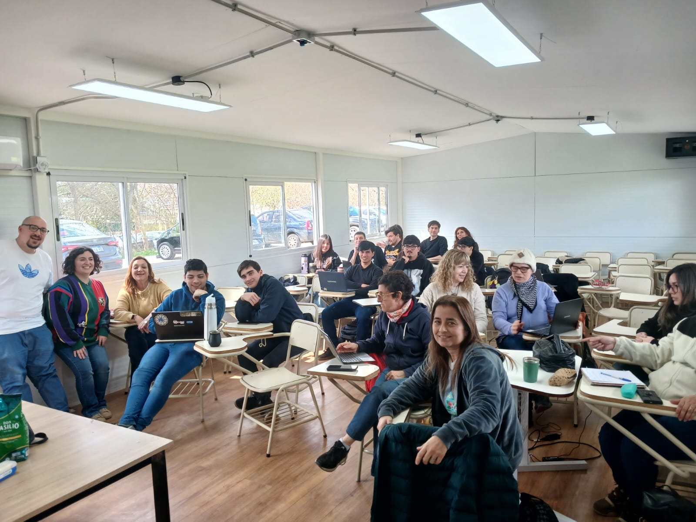

Un espacio para compartir las experiencias de formación y reflexión del equipo docente de ILyPC.

Formación docente
Una jornada para pensar desafíos
El equipo docente de Introducción a la Lógica y Problemas Computacionales participó de una jornada de formación sobre Pilas Bloques en el campo de deportes de la UNAHUR.
Durante el encuentro, Rocío González y Alfredo Sanzo compartieron los orígenes y el sentido pedagógico de la herramienta. A través de una dinámica participativa, docentes, asistentes y ayudantes trabajaron en la construcción de problemas y reflexionaron sobre cómo diseñar desafíos que permitan enseñar, aprender y evaluar conceptos de programación.
Rocío González y Alfredo SanzoUn encuentro para compartir la historia y el sentido pedagógico de Pilas Bloques.Pensar desafíosUna actividad compartida para pensar la construcción de problemas.La herramienta y su propuestaRocío González comparte la propuesta de Pilas Bloques.Intercambio de ideasAlfredo Sanzo comparte ideas con el equipo docente.Almuerzo compartidoUn momento de encuentro entre quienes participaron de la jornada.